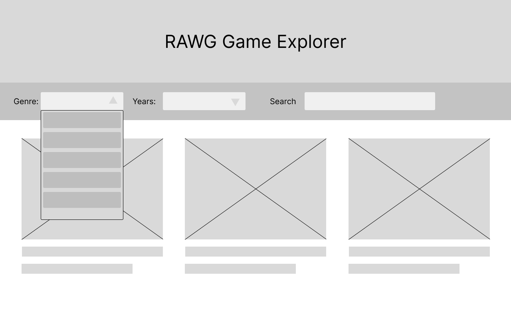
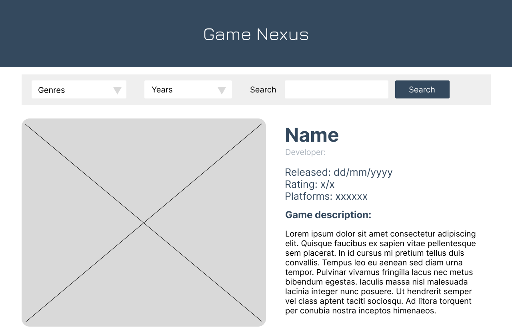
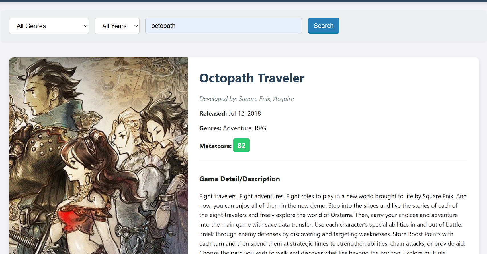

Build up a Searching Website by using Third-Party API

The core purpose of this project, Game Nexus, is to build an interactive web application that effectively leverages the RAWG third-party API to provide users with essential gaming information and detailed evaluation metrics. This website is designed around two distinct modes of interaction to maximize efficiency: Users can utilize the filter interface (Genre and Year) to easily explore and discover new titles across broad categories, transforming the search page into an interactive discovery tool. Alternatively, they can use the precise search function to find a specific game and quickly gain a comprehensive impression through key details like release year, Metascore, and developer information. Ultimately, the system design prioritizes enhancing the user's ability to evaluate and discover games efficiently by presenting dynamic API data in a clear, actionable manner.
Detailed Design Process
IA & Wireframing
When designing the mid-fid, I determined that a range could be defined using “genre” and “time,” and all related games could be retrieved.
Visual Design & Prototyping
Visually, we adopted a clean, modern style. We also made appropriate modifications to the title text to better align with the game's futuristic aesthetic.
Testing & Iteration
After several rounds of testing, this is the final detailed game search result that sets the tone. It includes the most crucial details—the specific release date and media scores—giving users a general understanding of the game. It also features a description outlining the gameplay and related worldview.
